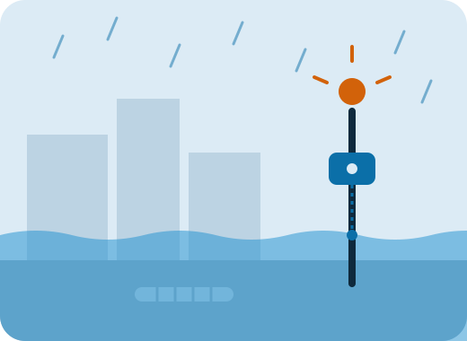

Altura da água na rua
cm
Normal
Rua sem alagamento no momento.
Rio Comprido · Rio de Janeiro
Um sensor perto do bueiro mede a altura da água, avisa na rua com luz e som e mostra no site o que fazer.
Funciona a bateria
Luz e som na rua

O problema
A água não desce, a rua alaga e moradores e pedestres só descobrem o perigo quando já estão na água.
Com vento forte, a luz também cai. Por isso o sensor funciona com bateria.
de água em movimento são suficientes para derrubar um adulto.
já arrastam um carro pequeno.
Fonte: National Weather Service.
Como funciona
Fica perto do bueiro e mede a altura da água na rua, em cm.
Analisa a medida recebida pelo sensor e identifica o nível de risco do alagamento.
Alerta quem está por perto, mesmo sem energia elétrica.
Mostra o nível da água e o que fazer em cada situação.
Simulador
Digite a altura da água e veja o nível. São as mesmas faixas do Python e do sensor.
Rua sem alagamento no momento.
Rua sem alagamento no momento.
Água acumulando. Evite a rua e tire o carro de perto do bueiro.
Não atravesse a pé. A correnteza pode derrubar uma pessoa.
Não saia de casa nem tente passar de carro. Fique longe de postes e fios.
Impacto
Avisa moradores e pedestres antes de a rua alagar, para ninguém atravessar água perigosa sem saber.
Ajuda o bairro a se adaptar às chuvas fortes, avisando mesmo sem energia e orientando o que fazer.